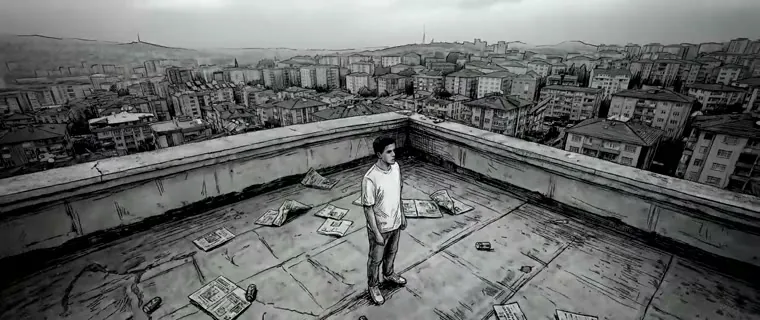
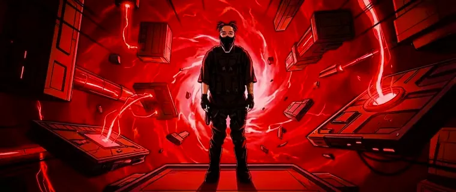
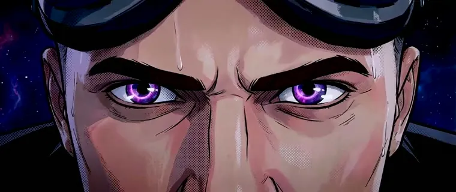

The Film
Directed by ÆRAY
Music Video
Concert Visuals · AI Animation
A 4-Era Reconstruction
A four-era reconstruction that revisualizes seven years of an artist's career through a custom AI pipeline — my signature cinematic, light-blue look across every single frame.
- Role
- AI Music Video Director
- Eras
- 4 · across 7 years
- Pipeline
- Custom AI
- Look
- Signature light-blue
- Plays
- ≈ 32K · ♥ 2K · 💬 44
The Four Eras
Seven years, four looks
Each era gets its own palette and energy — the same artist reimagined across the arc of a career, all held together by one consistent, AI-animated visual language.

Era I
Era II
Era IVSeen Live
Live
On the big screen — live at the concert
The work didn't just live online. It played across the venue's giant LED wall at a live show — era by era, in front of a packed crowd filming every second. From a screen to the stage.
How It Was Made
- Concept. A single music video split into four visual eras — one for each chapter of a seven-year career.
- Custom AI pipeline. A consistent, locked character and a signature light-blue grade across hundreds of AI-animated frames.
- Directed & finished. Concept, direction, editing and grade — end to end, as ÆRAY. My most-watched project to date.
Work With Me
Want a music video like this?
AI music videos, brand films and cinematic animation — written, directed and finished end to end.